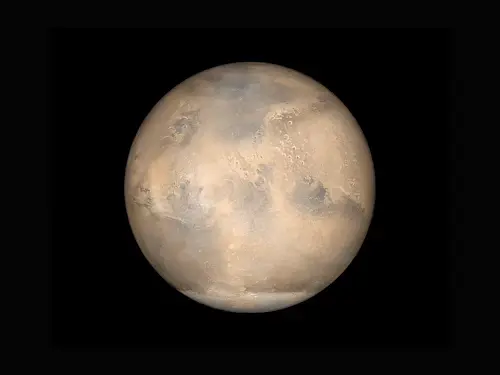

Venus
Venus merupakan planet kedua dari Matahari yang sering disebut sebagai planet kembaran Bumi karena memiliki kemiripan ukuran, massa, dan kerapatan bawaan. Namun, evolusi geologisnya mengalami fenomena runaway greenhouse effect (efek rumah kaca lepas kendali) yang ekstrem akibat atmosfer padat yang didominasi oleh gas karbon dioksida dan awan asam sulfat murni. Tekanan atmosfer permukaan Venus mencapai sekitar 92 bar (~92 kali tekanan permukaan Bumi), setara dengan tekanan di kedalaman 900 meter di bawah laut Bumi. Venus menunjukkan fenomena rotasi retrograd unik, di mana planet ini berotasi searah jarum jam (dari timur ke barat) dengan periode rotasi terpanjang di Tata Surya (243 hari Bumi), lebih lambat dibandingkan periode revolusinya (224,7 hari Bumi). Secara geologis, Venus tidak memiliki lempeng tektonik aktif layaknya Bumi, melainkan mengalami pembaharuan permukaan global (global resurfacing event) berkala akibat aktivitas vulkanisme masif.